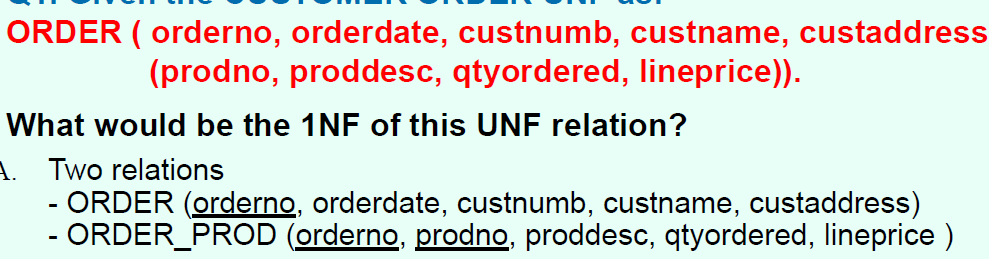
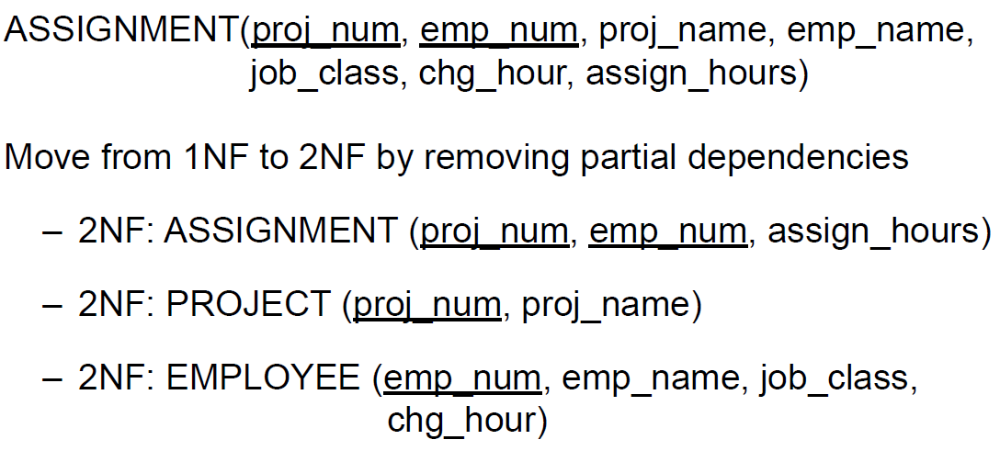
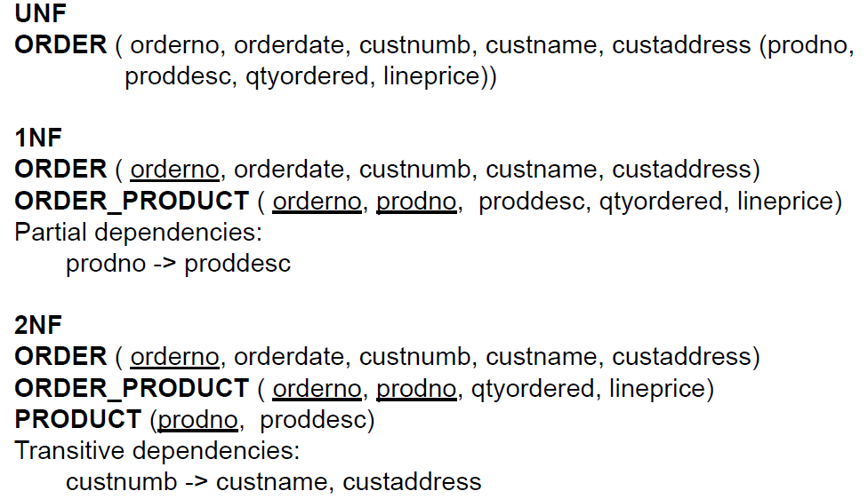
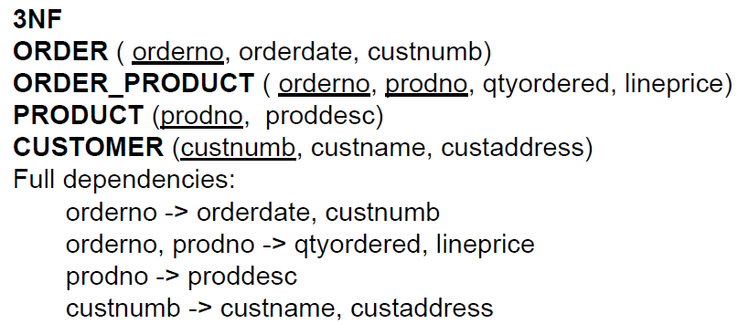

Normalization
▪UNF to 3 NF–UNF to 1 NF
– remove repeating group along with the PK of the main relation. –1NF to 2 NF
– remove partial dependency (general definition) partial dependency: exists when there is a functional dependence in which the determinant is only part of the primary key [only part of the primary key (B) is needed to determine the value of C] 【主键的部分决定的依赖关系】 –2NF to 3NF
– remove transitive dependency. transitive dependency exists when there are functional dependencies such that X Y, YZ, and X is the primary key【两个键都不是主键，但两者存在依赖关系】 ▪Dependency diagrams ▪Be careful in choosing the PK!   ▪Mapping a set of 3NF relations to a logical model